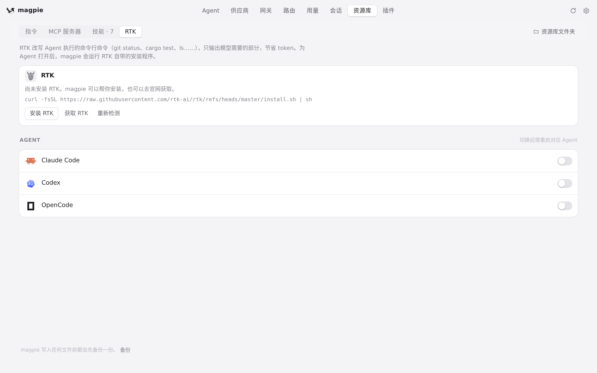
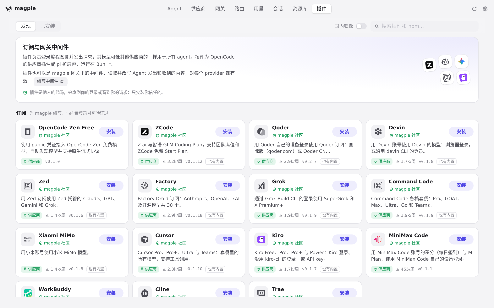

#1178 界面预览
commit 7daadf0 · 回到 PR · 插件页「已安装」列表的订阅名改为读缓存（不再每次逐个插件去问厂商要模型列表），名字还没到时那一行不再显示「没有 magpie 能用的登录」（并删掉该文案）；资源库 RTK 页读取时不再等包管理器，包管理器改到后台查并缓存，agent 探测也由两遍改为一遍。
红线是鼠标走过的轨迹，红色圆环是一次点击；底部文字是这一步在做什么。空格暂停，← → 逐段查看。
 资源库 RTK 页：首屏不再等包管理器 · 第一次打开 RTK 标签后的版本卡片
资源库 RTK 页：首屏不再等包管理器 · 第一次打开 RTK 标签后的版本卡片

资源库 RTK 页：首屏不再等包管理器 · 第二次打开 RTK 标签后的版本卡片

插件页「已安装」列表 · 插件页，「已安装」列表所在的这一页